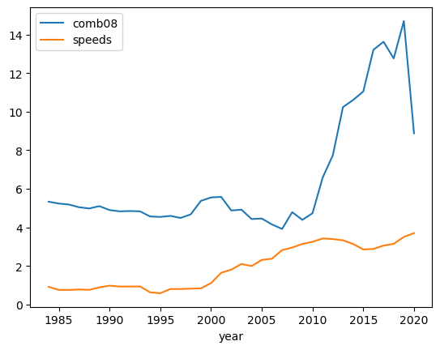
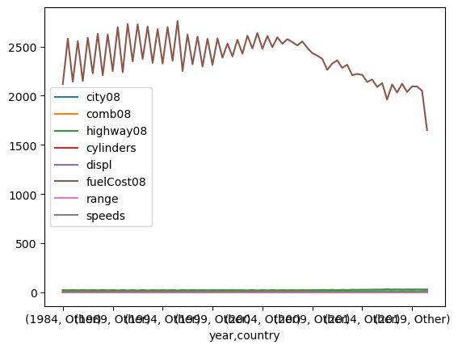
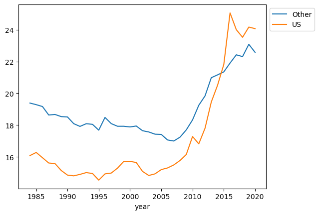
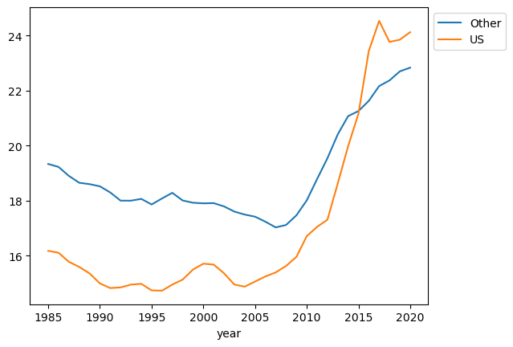

# bring in the pandas!
import pandas as pdIntroduction
Having code that is clean, readable and has a logical flow is invaluable. I discovered Structured Query Language (SQL) before Python, and as the name suggests, this already pushes you down this structured, logical road. I have only recently started to explore Python, but my experience so far is that the code can quickly become scattered and difficult to follow, particulary during the exploratory data analysis (EDA) phase.
I have just finished actively watching Efficient Pandas by Matt Harrison and decided to share the content via this blog. The video feels like a bit of a breakthrough for me, someone who is just starting out in the world of data science, and hopefully others will also benefit from reading this. Adopting the chaining method covered in this blog, whenever possible, should ensure that your code is cleaner, and reads like a recipe of ordered steps, reducing any potential ambiguities.
Initial set up
# check which version of pandas we're on
pd.__version__'1.5.0'# control the pandas display features
pd.options.display.min_rows = 20Dataset
The dataset we will be exploring is from https://www.fueleconomy.gov/feg/download.shtml which is the official U.S. government source for fuel economy information. The zipped csv file can be downloaded from here but we can just read in the file using pandas:
# read in our dataset
autos = pd.read_csv('https://github.com/mattharrison/datasets/raw/master/data/vehicles.csv.zip')/tmp/ipykernel_2753/3884461791.py:2: DtypeWarning: Columns (68,70,71,72,73,74,76,79) have mixed types. Specify dtype option on import or set low_memory=False.
autos = pd.read_csv('https://github.com/mattharrison/datasets/raw/master/data/vehicles.csv.zip')# Let's take a look
autos| barrels08 | barrelsA08 | charge120 | charge240 | city08 | city08U | cityA08 | cityA08U | cityCD | cityE | ... | mfrCode | c240Dscr | charge240b | c240bDscr | createdOn | modifiedOn | startStop | phevCity | phevHwy | phevComb | |
|---|---|---|---|---|---|---|---|---|---|---|---|---|---|---|---|---|---|---|---|---|---|
| 0 | 15.695714 | 0.0 | 0.0 | 0.0 | 19 | 0.0 | 0 | 0.0 | 0.0 | 0.0 | ... | NaN | NaN | 0.0 | NaN | Tue Jan 01 00:00:00 EST 2013 | Tue Jan 01 00:00:00 EST 2013 | NaN | 0 | 0 | 0 |
| 1 | 29.964545 | 0.0 | 0.0 | 0.0 | 9 | 0.0 | 0 | 0.0 | 0.0 | 0.0 | ... | NaN | NaN | 0.0 | NaN | Tue Jan 01 00:00:00 EST 2013 | Tue Jan 01 00:00:00 EST 2013 | NaN | 0 | 0 | 0 |
| 2 | 12.207778 | 0.0 | 0.0 | 0.0 | 23 | 0.0 | 0 | 0.0 | 0.0 | 0.0 | ... | NaN | NaN | 0.0 | NaN | Tue Jan 01 00:00:00 EST 2013 | Tue Jan 01 00:00:00 EST 2013 | NaN | 0 | 0 | 0 |
| 3 | 29.964545 | 0.0 | 0.0 | 0.0 | 10 | 0.0 | 0 | 0.0 | 0.0 | 0.0 | ... | NaN | NaN | 0.0 | NaN | Tue Jan 01 00:00:00 EST 2013 | Tue Jan 01 00:00:00 EST 2013 | NaN | 0 | 0 | 0 |
| 4 | 17.347895 | 0.0 | 0.0 | 0.0 | 17 | 0.0 | 0 | 0.0 | 0.0 | 0.0 | ... | NaN | NaN | 0.0 | NaN | Tue Jan 01 00:00:00 EST 2013 | Tue Jan 01 00:00:00 EST 2013 | NaN | 0 | 0 | 0 |
| 5 | 14.982273 | 0.0 | 0.0 | 0.0 | 21 | 0.0 | 0 | 0.0 | 0.0 | 0.0 | ... | NaN | NaN | 0.0 | NaN | Tue Jan 01 00:00:00 EST 2013 | Tue Jan 01 00:00:00 EST 2013 | NaN | 0 | 0 | 0 |
| 6 | 13.184400 | 0.0 | 0.0 | 0.0 | 22 | 0.0 | 0 | 0.0 | 0.0 | 0.0 | ... | NaN | NaN | 0.0 | NaN | Tue Jan 01 00:00:00 EST 2013 | Tue Jan 01 00:00:00 EST 2013 | NaN | 0 | 0 | 0 |
| 7 | 13.733750 | 0.0 | 0.0 | 0.0 | 23 | 0.0 | 0 | 0.0 | 0.0 | 0.0 | ... | NaN | NaN | 0.0 | NaN | Tue Jan 01 00:00:00 EST 2013 | Tue Jan 01 00:00:00 EST 2013 | NaN | 0 | 0 | 0 |
| 8 | 12.677308 | 0.0 | 0.0 | 0.0 | 23 | 0.0 | 0 | 0.0 | 0.0 | 0.0 | ... | NaN | NaN | 0.0 | NaN | Tue Jan 01 00:00:00 EST 2013 | Tue Jan 01 00:00:00 EST 2013 | NaN | 0 | 0 | 0 |
| 9 | 13.184400 | 0.0 | 0.0 | 0.0 | 23 | 0.0 | 0 | 0.0 | 0.0 | 0.0 | ... | NaN | NaN | 0.0 | NaN | Tue Jan 01 00:00:00 EST 2013 | Tue Jan 01 00:00:00 EST 2013 | NaN | 0 | 0 | 0 |
| ... | ... | ... | ... | ... | ... | ... | ... | ... | ... | ... | ... | ... | ... | ... | ... | ... | ... | ... | ... | ... | ... |
| 41134 | 16.480500 | 0.0 | 0.0 | 0.0 | 18 | 0.0 | 0 | 0.0 | 0.0 | 0.0 | ... | NaN | NaN | 0.0 | NaN | Tue Jan 01 00:00:00 EST 2013 | Tue Jan 01 00:00:00 EST 2013 | NaN | 0 | 0 | 0 |
| 41135 | 12.677308 | 0.0 | 0.0 | 0.0 | 23 | 0.0 | 0 | 0.0 | 0.0 | 0.0 | ... | NaN | NaN | 0.0 | NaN | Tue Jan 01 00:00:00 EST 2013 | Tue Jan 01 00:00:00 EST 2013 | NaN | 0 | 0 | 0 |
| 41136 | 13.733750 | 0.0 | 0.0 | 0.0 | 21 | 0.0 | 0 | 0.0 | 0.0 | 0.0 | ... | NaN | NaN | 0.0 | NaN | Tue Jan 01 00:00:00 EST 2013 | Tue Jan 01 00:00:00 EST 2013 | NaN | 0 | 0 | 0 |
| 41137 | 11.771786 | 0.0 | 0.0 | 0.0 | 24 | 0.0 | 0 | 0.0 | 0.0 | 0.0 | ... | NaN | NaN | 0.0 | NaN | Tue Jan 01 00:00:00 EST 2013 | Tue Jan 01 00:00:00 EST 2013 | NaN | 0 | 0 | 0 |
| 41138 | 13.184400 | 0.0 | 0.0 | 0.0 | 21 | 0.0 | 0 | 0.0 | 0.0 | 0.0 | ... | NaN | NaN | 0.0 | NaN | Tue Jan 01 00:00:00 EST 2013 | Tue Jan 01 00:00:00 EST 2013 | NaN | 0 | 0 | 0 |
| 41139 | 14.982273 | 0.0 | 0.0 | 0.0 | 19 | 0.0 | 0 | 0.0 | 0.0 | 0.0 | ... | NaN | NaN | 0.0 | NaN | Tue Jan 01 00:00:00 EST 2013 | Tue Jan 01 00:00:00 EST 2013 | NaN | 0 | 0 | 0 |
| 41140 | 14.330870 | 0.0 | 0.0 | 0.0 | 20 | 0.0 | 0 | 0.0 | 0.0 | 0.0 | ... | NaN | NaN | 0.0 | NaN | Tue Jan 01 00:00:00 EST 2013 | Tue Jan 01 00:00:00 EST 2013 | NaN | 0 | 0 | 0 |
| 41141 | 15.695714 | 0.0 | 0.0 | 0.0 | 18 | 0.0 | 0 | 0.0 | 0.0 | 0.0 | ... | NaN | NaN | 0.0 | NaN | Tue Jan 01 00:00:00 EST 2013 | Tue Jan 01 00:00:00 EST 2013 | NaN | 0 | 0 | 0 |
| 41142 | 15.695714 | 0.0 | 0.0 | 0.0 | 18 | 0.0 | 0 | 0.0 | 0.0 | 0.0 | ... | NaN | NaN | 0.0 | NaN | Tue Jan 01 00:00:00 EST 2013 | Tue Jan 01 00:00:00 EST 2013 | NaN | 0 | 0 | 0 |
| 41143 | 18.311667 | 0.0 | 0.0 | 0.0 | 16 | 0.0 | 0 | 0.0 | 0.0 | 0.0 | ... | NaN | NaN | 0.0 | NaN | Tue Jan 01 00:00:00 EST 2013 | Tue Jan 01 00:00:00 EST 2013 | NaN | 0 | 0 | 0 |
41144 rows × 83 columns
So our dataset includes 41,144 rows and 83 columns - that’s a lot of data! Let’s have a look at the columns:
autos.columnsIndex(['barrels08', 'barrelsA08', 'charge120', 'charge240', 'city08',
'city08U', 'cityA08', 'cityA08U', 'cityCD', 'cityE', 'cityUF', 'co2',
'co2A', 'co2TailpipeAGpm', 'co2TailpipeGpm', 'comb08', 'comb08U',
'combA08', 'combA08U', 'combE', 'combinedCD', 'combinedUF', 'cylinders',
'displ', 'drive', 'engId', 'eng_dscr', 'feScore', 'fuelCost08',
'fuelCostA08', 'fuelType', 'fuelType1', 'ghgScore', 'ghgScoreA',
'highway08', 'highway08U', 'highwayA08', 'highwayA08U', 'highwayCD',
'highwayE', 'highwayUF', 'hlv', 'hpv', 'id', 'lv2', 'lv4', 'make',
'model', 'mpgData', 'phevBlended', 'pv2', 'pv4', 'range', 'rangeCity',
'rangeCityA', 'rangeHwy', 'rangeHwyA', 'trany', 'UCity', 'UCityA',
'UHighway', 'UHighwayA', 'VClass', 'year', 'youSaveSpend', 'guzzler',
'trans_dscr', 'tCharger', 'sCharger', 'atvType', 'fuelType2', 'rangeA',
'evMotor', 'mfrCode', 'c240Dscr', 'charge240b', 'c240bDscr',
'createdOn', 'modifiedOn', 'startStop', 'phevCity', 'phevHwy',
'phevComb'],
dtype='object')Data Types
Let’s concentrate our focus on a subset of the data. Let’s look at 14 of the 83 columns and also find out about the types of data included. Getting the right types will enable analysis and correctness.
# Let's drill down and focus on just 14 of the 83 columns
cols = ['city08','comb08', 'highway08','cylinders', 'displ', 'drive', 'eng_dscr', 'fuelCost08',
'make', 'model', 'trany', 'range', 'createdOn', 'year'] # Let's see the data types for each column
autos[cols].dtypescity08 int64
comb08 int64
highway08 int64
cylinders float64
displ float64
drive object
eng_dscr object
fuelCost08 int64
make object
model object
trany object
range int64
createdOn object
year int64
dtype: object# Let's see how much memory is being used by column
autos[cols].memory_usage(deep=True)Index 128
city08 329152
comb08 329152
highway08 329152
cylinders 329152
displ 329152
drive 3028369
eng_dscr 2135693
fuelCost08 329152
make 2606267
model 2813134
trany 2933276
range 329152
createdOn 3497240
year 329152
dtype: int64# Let's see how much memory is being used in total
autos[cols].memory_usage(deep=True).sum()19647323Integers (int)
Integers(int) are numbers without a decimal point. Let’s grab some summary statistics for our integer columns:
# summary stats for integer columns
(autos
[cols]
.select_dtypes(int)
.describe()
)| city08 | comb08 | highway08 | fuelCost08 | range | year | |
|---|---|---|---|---|---|---|
| count | 41144.000000 | 41144.000000 | 41144.000000 | 41144.000000 | 41144.000000 | 41144.000000 |
| mean | 18.369045 | 20.616396 | 24.504667 | 2362.335942 | 0.793506 | 2001.535266 |
| std | 7.905886 | 7.674535 | 7.730364 | 654.981925 | 13.041592 | 11.142414 |
| min | 6.000000 | 7.000000 | 9.000000 | 500.000000 | 0.000000 | 1984.000000 |
| 25% | 15.000000 | 17.000000 | 20.000000 | 1900.000000 | 0.000000 | 1991.000000 |
| 50% | 17.000000 | 20.000000 | 24.000000 | 2350.000000 | 0.000000 | 2002.000000 |
| 75% | 20.000000 | 23.000000 | 28.000000 | 2700.000000 | 0.000000 | 2011.000000 |
| max | 150.000000 | 136.000000 | 124.000000 | 7400.000000 | 370.000000 | 2020.000000 |
Chaining
The above code is fine but it can quickly become cluttered and unreadable. A better way is to lean on SQL coding best practice which means that our code reads more like a recipe of ordered steps:
# use chaining to grab summary stats for integer columns
(autos
[cols]
.select_dtypes(int)
.describe()
)| city08 | comb08 | highway08 | fuelCost08 | range | year | |
|---|---|---|---|---|---|---|
| count | 41144.000000 | 41144.000000 | 41144.000000 | 41144.000000 | 41144.000000 | 41144.000000 |
| mean | 18.369045 | 20.616396 | 24.504667 | 2362.335942 | 0.793506 | 2001.535266 |
| std | 7.905886 | 7.674535 | 7.730364 | 654.981925 | 13.041592 | 11.142414 |
| min | 6.000000 | 7.000000 | 9.000000 | 500.000000 | 0.000000 | 1984.000000 |
| 25% | 15.000000 | 17.000000 | 20.000000 | 1900.000000 | 0.000000 | 1991.000000 |
| 50% | 17.000000 | 20.000000 | 24.000000 | 2350.000000 | 0.000000 | 2002.000000 |
| 75% | 20.000000 | 23.000000 | 28.000000 | 2700.000000 | 0.000000 | 2011.000000 |
| max | 150.000000 | 136.000000 | 124.000000 | 7400.000000 | 370.000000 | 2020.000000 |
Same result, much more readable code! Chaining is also known as ‘flow programming’. Rather than creating intermediate variables, leverage the fact that most operations return a new object which can be worked on.
Note, if you can’t find a way to chain we can use pandas .pipe. We’ll see how this works later.
Saving Space
import numpy as npThe int columns are currently in int64 format. Let’s try to free up some space by representing our data more memory efficiently. We can use Numpy to help with this:
# Can comb08 column be int8?
np.iinfo(np.int8)iinfo(min=-128, max=127, dtype=int8)The range -128 to 127 can be represented as 8 bits. (There are 256 values which in binary form can be represented by 11111111 i.e. 8 bits). We have a maximum value of 136 for the comb08 column so we can’t convert to int8 without losing info. We can however convert the highway08 column to int8. Let’s try int16:
# Can comb08 column be int16?
np.iinfo(np.int16)iinfo(min=-32768, max=32767, dtype=int16)All of our data is within this range, so we can go ahead and convert all int64 columns to int16 (and int8 for highway08):
# convert from int64 to int16 and int8 in order to free up some memory
# also obtain summary statistics for integer columns
(autos
[cols]
.astype({'city08': 'int16', 'comb08': 'int16', 'highway08': 'int8','fuelCost08':'int16', 'range':'int16', 'year':'int16'})
.select_dtypes(['integer'])
.describe()
)| city08 | comb08 | highway08 | fuelCost08 | range | year | |
|---|---|---|---|---|---|---|
| count | 41144.000000 | 41144.000000 | 41144.000000 | 41144.000000 | 41144.000000 | 41144.000000 |
| mean | 18.369045 | 20.616396 | 24.504667 | 2362.335942 | 0.793506 | 2001.535266 |
| std | 7.905886 | 7.674535 | 7.730364 | 654.981925 | 13.041592 | 11.142414 |
| min | 6.000000 | 7.000000 | 9.000000 | 500.000000 | 0.000000 | 1984.000000 |
| 25% | 15.000000 | 17.000000 | 20.000000 | 1900.000000 | 0.000000 | 1991.000000 |
| 50% | 17.000000 | 20.000000 | 24.000000 | 2350.000000 | 0.000000 | 2002.000000 |
| 75% | 20.000000 | 23.000000 | 28.000000 | 2700.000000 | 0.000000 | 2011.000000 |
| max | 150.000000 | 136.000000 | 124.000000 | 7400.000000 | 370.000000 | 2020.000000 |
Let’s see if we have saved any space by converting:
# check memory usage
(autos
[cols]
.astype({'city08': 'int16', 'comb08': 'int16', 'highway08': 'int8','fuelCost08':'int16', 'range':'int16', 'year':'int16'})
.memory_usage(deep=True)
.sum() # was 19,647,323
)18124995So a saving, but not substantial - just under 8%. Let’s see if we can improve on this:
Floats
A floating point (known as a float) number has decimal points even if that decimal point value is 0. For example: 1.13, 2.0, 1234.345. If we have a column that contains both integers and floating point numbers, Pandas will assign the entire column to the float data type so the decimal points are not lost.
# Let's take a look at the columns with a float data type
(autos
[cols]
.select_dtypes('float')
)| cylinders | displ | |
|---|---|---|
| 0 | 4.0 | 2.0 |
| 1 | 12.0 | 4.9 |
| 2 | 4.0 | 2.2 |
| 3 | 8.0 | 5.2 |
| 4 | 4.0 | 2.2 |
| 5 | 4.0 | 1.8 |
| 6 | 4.0 | 1.8 |
| 7 | 4.0 | 1.6 |
| 8 | 4.0 | 1.6 |
| 9 | 4.0 | 1.8 |
| ... | ... | ... |
| 41134 | 4.0 | 2.1 |
| 41135 | 4.0 | 1.9 |
| 41136 | 4.0 | 1.9 |
| 41137 | 4.0 | 1.9 |
| 41138 | 4.0 | 1.9 |
| 41139 | 4.0 | 2.2 |
| 41140 | 4.0 | 2.2 |
| 41141 | 4.0 | 2.2 |
| 41142 | 4.0 | 2.2 |
| 41143 | 4.0 | 2.2 |
41144 rows × 2 columns
Cylinders look int like - we would expect the number of cylinders to be an integer, and not a float (decimal).
# summary stats for cylinders
(autos
.cylinders
.describe()
)count 40938.000000
mean 5.717084
std 1.755517
min 2.000000
25% 4.000000
50% 6.000000
75% 6.000000
max 16.000000
Name: cylinders, dtype: float64Oops, we have missing values - count = 40,938 but we have 41,144 rows.
# Let's count the various values for cylinders
(autos
.cylinders
.value_counts(dropna=False)
)4.0 15938
6.0 14284
8.0 8801
5.0 771
12.0 626
3.0 279
NaN 206
10.0 170
2.0 59
16.0 10
Name: cylinders, dtype: int64As anticipated, we have missing values (206) represented by NaN
## where are they missing? We can use .query
(autos
[cols]
.query('cylinders.isna()')
)| city08 | comb08 | highway08 | cylinders | displ | drive | eng_dscr | fuelCost08 | make | model | trany | range | createdOn | year | |
|---|---|---|---|---|---|---|---|---|---|---|---|---|---|---|
| 7138 | 81 | 85 | 91 | NaN | NaN | NaN | NaN | 800 | Nissan | Altra EV | NaN | 90 | Tue Jan 01 00:00:00 EST 2013 | 2000 |
| 7139 | 81 | 72 | 64 | NaN | NaN | 2-Wheel Drive | NaN | 900 | Toyota | RAV4 EV | NaN | 88 | Tue Jan 01 00:00:00 EST 2013 | 2000 |
| 8143 | 81 | 72 | 64 | NaN | NaN | 2-Wheel Drive | NaN | 900 | Toyota | RAV4 EV | NaN | 88 | Tue Jan 01 00:00:00 EST 2013 | 2001 |
| 8144 | 74 | 65 | 58 | NaN | NaN | NaN | NaN | 1000 | Ford | Th!nk | NaN | 29 | Tue Jan 01 00:00:00 EST 2013 | 2001 |
| 8146 | 45 | 39 | 33 | NaN | NaN | 2-Wheel Drive | NaN | 1700 | Ford | Explorer USPS Electric | NaN | 38 | Tue Jan 01 00:00:00 EST 2013 | 2001 |
| 8147 | 84 | 75 | 66 | NaN | NaN | NaN | NaN | 900 | Nissan | Hyper-Mini | NaN | 33 | Tue Jan 01 00:00:00 EST 2013 | 2001 |
| 9212 | 87 | 78 | 69 | NaN | NaN | 2-Wheel Drive | NaN | 850 | Toyota | RAV4 EV | NaN | 95 | Tue Jan 01 00:00:00 EST 2013 | 2002 |
| 9213 | 45 | 39 | 33 | NaN | NaN | 2-Wheel Drive | NaN | 1700 | Ford | Explorer USPS Electric | NaN | 38 | Tue Jan 01 00:00:00 EST 2013 | 2002 |
| 10329 | 87 | 78 | 69 | NaN | NaN | 2-Wheel Drive | NaN | 850 | Toyota | RAV4 EV | NaN | 95 | Tue Jan 01 00:00:00 EST 2013 | 2003 |
| 21413 | 22 | 24 | 28 | NaN | NaN | 4-Wheel Drive | NaN | 1750 | Subaru | RX Turbo | Manual 5-spd | 0 | Tue Jan 01 00:00:00 EST 2013 | 1985 |
| ... | ... | ... | ... | ... | ... | ... | ... | ... | ... | ... | ... | ... | ... | ... |
| 34407 | 73 | 72 | 71 | NaN | NaN | Front-Wheel Drive | NaN | 900 | BYD | e6 | Automatic (A1) | 187 | Wed Mar 13 00:00:00 EDT 2019 | 2019 |
| 34408 | 118 | 108 | 97 | NaN | NaN | Front-Wheel Drive | NaN | 600 | Nissan | Leaf (62 kW-hr battery pack) | Automatic (A1) | 226 | Wed Mar 13 00:00:00 EDT 2019 | 2019 |
| 34409 | 114 | 104 | 94 | NaN | NaN | Front-Wheel Drive | NaN | 650 | Nissan | Leaf SV/SL (62 kW-hr battery pack) | Automatic (A1) | 215 | Wed Mar 13 00:00:00 EDT 2019 | 2019 |
| 34538 | 74 | 74 | 73 | NaN | NaN | All-Wheel Drive | NaN | 900 | Audi | e-tron | Automatic (A1) | 204 | Tue Apr 16 00:00:00 EDT 2019 | 2019 |
| 34561 | 80 | 76 | 72 | NaN | NaN | 4-Wheel Drive | NaN | 850 | Jaguar | I-Pace | Automatic (A1) | 234 | Thu May 02 00:00:00 EDT 2019 | 2020 |
| 34563 | 138 | 131 | 124 | NaN | NaN | Rear-Wheel Drive | NaN | 500 | Tesla | Model 3 Standard Range | Automatic (A1) | 220 | Thu May 02 00:00:00 EDT 2019 | 2019 |
| 34564 | 140 | 133 | 124 | NaN | NaN | Rear-Wheel Drive | NaN | 500 | Tesla | Model 3 Standard Range Plus | Automatic (A1) | 240 | Thu May 02 00:00:00 EDT 2019 | 2019 |
| 34565 | 115 | 111 | 107 | NaN | NaN | All-Wheel Drive | NaN | 600 | Tesla | Model S Long Range | Automatic (A1) | 370 | Thu May 02 00:00:00 EDT 2019 | 2019 |
| 34566 | 104 | 104 | 104 | NaN | NaN | All-Wheel Drive | NaN | 650 | Tesla | Model S Performance (19" Wheels) | Automatic (A1) | 345 | Thu May 02 00:00:00 EDT 2019 | 2019 |
| 34567 | 98 | 97 | 96 | NaN | NaN | All-Wheel Drive | NaN | 700 | Tesla | Model S Performance (21" Wheels) | Automatic (A1) | 325 | Thu May 02 00:00:00 EDT 2019 | 2019 |
206 rows × 14 columns
## chaining - add cylinders and displ columns replacing NaN with 0
(autos
[cols]
.assign(cylinders=autos.cylinders.fillna(0).astype('int8'),
displ=autos.displ.fillna(0))
.astype({'city08': 'int16', 'comb08': 'int16', 'highway08': 'int8','fuelCost08':'int16', 'range':'int16', 'year':'int16'})
.describe()
)| city08 | comb08 | highway08 | cylinders | displ | fuelCost08 | range | year | |
|---|---|---|---|---|---|---|---|---|
| count | 41144.000000 | 41144.000000 | 41144.000000 | 41144.000000 | 41144.000000 | 41144.000000 | 41144.000000 | 41144.000000 |
| mean | 18.369045 | 20.616396 | 24.504667 | 5.688460 | 3.277904 | 2362.335942 | 0.793506 | 2001.535266 |
| std | 7.905886 | 7.674535 | 7.730364 | 1.797009 | 1.373415 | 654.981925 | 13.041592 | 11.142414 |
| min | 6.000000 | 7.000000 | 9.000000 | 0.000000 | 0.000000 | 500.000000 | 0.000000 | 1984.000000 |
| 25% | 15.000000 | 17.000000 | 20.000000 | 4.000000 | 2.200000 | 1900.000000 | 0.000000 | 1991.000000 |
| 50% | 17.000000 | 20.000000 | 24.000000 | 6.000000 | 3.000000 | 2350.000000 | 0.000000 | 2002.000000 |
| 75% | 20.000000 | 23.000000 | 28.000000 | 6.000000 | 4.300000 | 2700.000000 | 0.000000 | 2011.000000 |
| max | 150.000000 | 136.000000 | 124.000000 | 16.000000 | 8.400000 | 7400.000000 | 370.000000 | 2020.000000 |
# use this to inspect float sizes
np.finfo(np.float16)finfo(resolution=0.001, min=-6.55040e+04, max=6.55040e+04, dtype=float16)## chaining - add cylinders and displ columns replacing NaN with 0
(autos
[cols]
.assign(cylinders=autos.cylinders.fillna(0).astype('int8'),
displ=autos.displ.fillna(0).astype('float16'))
.astype({'city08': 'int16', 'comb08': 'int16', 'highway08': 'int8','fuelCost08':'int16', 'range':'int16', 'year':'int16'})
)| city08 | comb08 | highway08 | cylinders | displ | drive | eng_dscr | fuelCost08 | make | model | trany | range | createdOn | year | |
|---|---|---|---|---|---|---|---|---|---|---|---|---|---|---|
| 0 | 19 | 21 | 25 | 4 | 2.000000 | Rear-Wheel Drive | (FFS) | 2000 | Alfa Romeo | Spider Veloce 2000 | Manual 5-spd | 0 | Tue Jan 01 00:00:00 EST 2013 | 1985 |
| 1 | 9 | 11 | 14 | 12 | 4.898438 | Rear-Wheel Drive | (GUZZLER) | 3850 | Ferrari | Testarossa | Manual 5-spd | 0 | Tue Jan 01 00:00:00 EST 2013 | 1985 |
| 2 | 23 | 27 | 33 | 4 | 2.199219 | Front-Wheel Drive | (FFS) | 1550 | Dodge | Charger | Manual 5-spd | 0 | Tue Jan 01 00:00:00 EST 2013 | 1985 |
| 3 | 10 | 11 | 12 | 8 | 5.199219 | Rear-Wheel Drive | NaN | 3850 | Dodge | B150/B250 Wagon 2WD | Automatic 3-spd | 0 | Tue Jan 01 00:00:00 EST 2013 | 1985 |
| 4 | 17 | 19 | 23 | 4 | 2.199219 | 4-Wheel or All-Wheel Drive | (FFS,TRBO) | 2700 | Subaru | Legacy AWD Turbo | Manual 5-spd | 0 | Tue Jan 01 00:00:00 EST 2013 | 1993 |
| 5 | 21 | 22 | 24 | 4 | 1.799805 | Front-Wheel Drive | (FFS) | 1900 | Subaru | Loyale | Automatic 3-spd | 0 | Tue Jan 01 00:00:00 EST 2013 | 1993 |
| 6 | 22 | 25 | 29 | 4 | 1.799805 | Front-Wheel Drive | (FFS) | 1700 | Subaru | Loyale | Manual 5-spd | 0 | Tue Jan 01 00:00:00 EST 2013 | 1993 |
| 7 | 23 | 24 | 26 | 4 | 1.599609 | Front-Wheel Drive | (FFS) | 1750 | Toyota | Corolla | Automatic 3-spd | 0 | Tue Jan 01 00:00:00 EST 2013 | 1993 |
| 8 | 23 | 26 | 31 | 4 | 1.599609 | Front-Wheel Drive | (FFS) | 1600 | Toyota | Corolla | Manual 5-spd | 0 | Tue Jan 01 00:00:00 EST 2013 | 1993 |
| 9 | 23 | 25 | 30 | 4 | 1.799805 | Front-Wheel Drive | (FFS) | 1700 | Toyota | Corolla | Automatic 4-spd | 0 | Tue Jan 01 00:00:00 EST 2013 | 1993 |
| ... | ... | ... | ... | ... | ... | ... | ... | ... | ... | ... | ... | ... | ... | ... |
| 41134 | 18 | 20 | 24 | 4 | 2.099609 | Front-Wheel Drive | (FFS) | 2100 | Saab | 900 | Manual 5-spd | 0 | Tue Jan 01 00:00:00 EST 2013 | 1993 |
| 41135 | 23 | 26 | 33 | 4 | 1.900391 | Front-Wheel Drive | (TBI) (FFS) | 1600 | Saturn | SL | Automatic 4-spd | 0 | Tue Jan 01 00:00:00 EST 2013 | 1993 |
| 41136 | 21 | 24 | 30 | 4 | 1.900391 | Front-Wheel Drive | (MFI) (FFS) | 1750 | Saturn | SL | Automatic 4-spd | 0 | Tue Jan 01 00:00:00 EST 2013 | 1993 |
| 41137 | 24 | 28 | 33 | 4 | 1.900391 | Front-Wheel Drive | (TBI) (FFS) | 1500 | Saturn | SL | Manual 5-spd | 0 | Tue Jan 01 00:00:00 EST 2013 | 1993 |
| 41138 | 21 | 25 | 32 | 4 | 1.900391 | Front-Wheel Drive | (MFI) (FFS) | 1700 | Saturn | SL | Manual 5-spd | 0 | Tue Jan 01 00:00:00 EST 2013 | 1993 |
| 41139 | 19 | 22 | 26 | 4 | 2.199219 | Front-Wheel Drive | (FFS) | 1900 | Subaru | Legacy | Automatic 4-spd | 0 | Tue Jan 01 00:00:00 EST 2013 | 1993 |
| 41140 | 20 | 23 | 28 | 4 | 2.199219 | Front-Wheel Drive | (FFS) | 1850 | Subaru | Legacy | Manual 5-spd | 0 | Tue Jan 01 00:00:00 EST 2013 | 1993 |
| 41141 | 18 | 21 | 24 | 4 | 2.199219 | 4-Wheel or All-Wheel Drive | (FFS) | 2000 | Subaru | Legacy AWD | Automatic 4-spd | 0 | Tue Jan 01 00:00:00 EST 2013 | 1993 |
| 41142 | 18 | 21 | 24 | 4 | 2.199219 | 4-Wheel or All-Wheel Drive | (FFS) | 2000 | Subaru | Legacy AWD | Manual 5-spd | 0 | Tue Jan 01 00:00:00 EST 2013 | 1993 |
| 41143 | 16 | 18 | 21 | 4 | 2.199219 | 4-Wheel or All-Wheel Drive | (FFS,TRBO) | 2900 | Subaru | Legacy AWD Turbo | Automatic 4-spd | 0 | Tue Jan 01 00:00:00 EST 2013 | 1993 |
41144 rows × 14 columns
# new memory usage
(autos
#[cols]
.loc[:,cols]
.assign(cylinders=autos.cylinders.fillna(0).astype('int8'),
displ=autos.displ.fillna(0).astype('float16'))
.astype({'city08': 'int16', 'comb08': 'int16', 'highway08': 'int8','fuelCost08':'int16', 'range':'int16', 'year':'int16'})
.memory_usage(deep=True)
.sum() # was 19,647,323
)17590123A further reduction.
Objects
At the very basic level, Pandas objects can be thought of as enhanced versions of NumPy structured arrays in which the rows and columns are identified with labels rather than simple integer indices.
# let's take a look at our object columns
(autos
[cols]
.select_dtypes(object)
)| drive | eng_dscr | make | model | trany | createdOn | |
|---|---|---|---|---|---|---|
| 0 | Rear-Wheel Drive | (FFS) | Alfa Romeo | Spider Veloce 2000 | Manual 5-spd | Tue Jan 01 00:00:00 EST 2013 |
| 1 | Rear-Wheel Drive | (GUZZLER) | Ferrari | Testarossa | Manual 5-spd | Tue Jan 01 00:00:00 EST 2013 |
| 2 | Front-Wheel Drive | (FFS) | Dodge | Charger | Manual 5-spd | Tue Jan 01 00:00:00 EST 2013 |
| 3 | Rear-Wheel Drive | NaN | Dodge | B150/B250 Wagon 2WD | Automatic 3-spd | Tue Jan 01 00:00:00 EST 2013 |
| 4 | 4-Wheel or All-Wheel Drive | (FFS,TRBO) | Subaru | Legacy AWD Turbo | Manual 5-spd | Tue Jan 01 00:00:00 EST 2013 |
| 5 | Front-Wheel Drive | (FFS) | Subaru | Loyale | Automatic 3-spd | Tue Jan 01 00:00:00 EST 2013 |
| 6 | Front-Wheel Drive | (FFS) | Subaru | Loyale | Manual 5-spd | Tue Jan 01 00:00:00 EST 2013 |
| 7 | Front-Wheel Drive | (FFS) | Toyota | Corolla | Automatic 3-spd | Tue Jan 01 00:00:00 EST 2013 |
| 8 | Front-Wheel Drive | (FFS) | Toyota | Corolla | Manual 5-spd | Tue Jan 01 00:00:00 EST 2013 |
| 9 | Front-Wheel Drive | (FFS) | Toyota | Corolla | Automatic 4-spd | Tue Jan 01 00:00:00 EST 2013 |
| ... | ... | ... | ... | ... | ... | ... |
| 41134 | Front-Wheel Drive | (FFS) | Saab | 900 | Manual 5-spd | Tue Jan 01 00:00:00 EST 2013 |
| 41135 | Front-Wheel Drive | (TBI) (FFS) | Saturn | SL | Automatic 4-spd | Tue Jan 01 00:00:00 EST 2013 |
| 41136 | Front-Wheel Drive | (MFI) (FFS) | Saturn | SL | Automatic 4-spd | Tue Jan 01 00:00:00 EST 2013 |
| 41137 | Front-Wheel Drive | (TBI) (FFS) | Saturn | SL | Manual 5-spd | Tue Jan 01 00:00:00 EST 2013 |
| 41138 | Front-Wheel Drive | (MFI) (FFS) | Saturn | SL | Manual 5-spd | Tue Jan 01 00:00:00 EST 2013 |
| 41139 | Front-Wheel Drive | (FFS) | Subaru | Legacy | Automatic 4-spd | Tue Jan 01 00:00:00 EST 2013 |
| 41140 | Front-Wheel Drive | (FFS) | Subaru | Legacy | Manual 5-spd | Tue Jan 01 00:00:00 EST 2013 |
| 41141 | 4-Wheel or All-Wheel Drive | (FFS) | Subaru | Legacy AWD | Automatic 4-spd | Tue Jan 01 00:00:00 EST 2013 |
| 41142 | 4-Wheel or All-Wheel Drive | (FFS) | Subaru | Legacy AWD | Manual 5-spd | Tue Jan 01 00:00:00 EST 2013 |
| 41143 | 4-Wheel or All-Wheel Drive | (FFS,TRBO) | Subaru | Legacy AWD Turbo | Automatic 4-spd | Tue Jan 01 00:00:00 EST 2013 |
41144 rows × 6 columns
## drive looks categorical
(autos
.drive
.value_counts(dropna=False)
)Front-Wheel Drive 14236
Rear-Wheel Drive 13831
4-Wheel or All-Wheel Drive 6648
All-Wheel Drive 3015
4-Wheel Drive 1460
NaN 1189
2-Wheel Drive 507
Part-time 4-Wheel Drive 258
Name: drive, dtype: int64# Where are the missing values NaN ?
(autos
[cols]
.query('drive.isna()')
)| city08 | comb08 | highway08 | cylinders | displ | drive | eng_dscr | fuelCost08 | make | model | trany | range | createdOn | year | |
|---|---|---|---|---|---|---|---|---|---|---|---|---|---|---|
| 7138 | 81 | 85 | 91 | NaN | NaN | NaN | NaN | 800 | Nissan | Altra EV | NaN | 90 | Tue Jan 01 00:00:00 EST 2013 | 2000 |
| 8144 | 74 | 65 | 58 | NaN | NaN | NaN | NaN | 1000 | Ford | Th!nk | NaN | 29 | Tue Jan 01 00:00:00 EST 2013 | 2001 |
| 8147 | 84 | 75 | 66 | NaN | NaN | NaN | NaN | 900 | Nissan | Hyper-Mini | NaN | 33 | Tue Jan 01 00:00:00 EST 2013 | 2001 |
| 18217 | 18 | 21 | 25 | 4.0 | 2.0 | NaN | (FFS) | 2000 | Alfa Romeo | Spider Veloce 2000 | Manual 5-spd | 0 | Tue Jan 01 00:00:00 EST 2013 | 1984 |
| 18218 | 20 | 22 | 26 | 4.0 | 1.5 | NaN | (FFS) | 1900 | Bertone | X1/9 | Manual 5-spd | 0 | Tue Jan 01 00:00:00 EST 2013 | 1984 |
| 18219 | 13 | 15 | 20 | 8.0 | 5.7 | NaN | (350 V8) (FFS) | 2800 | Chevrolet | Corvette | Automatic 4-spd | 0 | Tue Jan 01 00:00:00 EST 2013 | 1984 |
| 18220 | 13 | 15 | 20 | 8.0 | 5.7 | NaN | (350 V8) (FFS) | 2800 | Chevrolet | Corvette | Manual 4-spd | 0 | Tue Jan 01 00:00:00 EST 2013 | 1984 |
| 18221 | 15 | 17 | 20 | 6.0 | 3.0 | NaN | (FFS,TRBO) | 2500 | Nissan | 300ZX | Automatic 4-spd | 0 | Tue Jan 01 00:00:00 EST 2013 | 1984 |
| 18222 | 16 | 18 | 20 | 6.0 | 3.0 | NaN | (FFS) | 2350 | Nissan | 300ZX | Automatic 4-spd | 0 | Tue Jan 01 00:00:00 EST 2013 | 1984 |
| 18223 | 16 | 18 | 22 | 6.0 | 3.0 | NaN | (FFS,TRBO) | 2350 | Nissan | 300ZX | Manual 5-spd | 0 | Tue Jan 01 00:00:00 EST 2013 | 1984 |
| ... | ... | ... | ... | ... | ... | ... | ... | ... | ... | ... | ... | ... | ... | ... |
| 20063 | 13 | 15 | 19 | 8.0 | 5.0 | NaN | (FFS) CA model | 2800 | Mercury | Grand Marquis Wagon | Automatic 4-spd | 0 | Tue Jan 01 00:00:00 EST 2013 | 1984 |
| 20064 | 13 | 15 | 20 | 8.0 | 5.0 | NaN | (GM-OLDS) CA model | 2800 | Oldsmobile | Custom Cruiser Wagon | Automatic 4-spd | 0 | Tue Jan 01 00:00:00 EST 2013 | 1984 |
| 20065 | 14 | 16 | 19 | 8.0 | 5.0 | NaN | (GM-CHEV) CA model | 2650 | Pontiac | Parisienne Wagon | Automatic 4-spd | 0 | Tue Jan 01 00:00:00 EST 2013 | 1984 |
| 20387 | 14 | 14 | 15 | 4.0 | 2.4 | NaN | (FFS) CA model | 3000 | Nissan | Pickup Cab Chassis | Manual 5-spd | 0 | Tue Jan 01 00:00:00 EST 2013 | 1984 |
| 21129 | 14 | 16 | 21 | 8.0 | 3.5 | NaN | GUZZLER FFS,TURBO | 3250 | Lotus | Esprit V8 | Manual 5-spd | 0 | Tue Jan 01 00:00:00 EST 2013 | 2002 |
| 23029 | 79 | 85 | 94 | NaN | NaN | NaN | Lead Acid | 800 | GMC | EV1 | Automatic (A1) | 55 | Tue Jan 01 00:00:00 EST 2013 | 1999 |
| 23030 | 35 | 37 | 39 | NaN | NaN | NaN | NiMH | 1750 | GMC | EV1 | Automatic (A1) | 105 | Tue Jan 01 00:00:00 EST 2013 | 1999 |
| 23032 | 49 | 48 | 46 | NaN | NaN | NaN | NaN | 1400 | Honda | EV Plus | Automatic (A1) | 81 | Tue Jan 01 00:00:00 EST 2013 | 1999 |
| 23037 | 49 | 48 | 46 | NaN | NaN | NaN | NaN | 1400 | Honda | EV Plus | Automatic (A1) | 81 | Tue Jan 01 00:00:00 EST 2013 | 1998 |
| 23040 | 102 | 98 | 94 | NaN | NaN | NaN | NaN | 650 | MINI | MiniE | Automatic (A1) | 100 | Tue Jan 01 00:00:00 EST 2013 | 2008 |
1189 rows × 14 columns
# let's look at the drive column, grouped by year
(autos
[cols]
.groupby('year')
.drive
.nunique()
) year
1984 3
1985 4
1986 4
1987 3
1988 3
1989 3
1990 3
1991 3
1992 3
1993 3
1994 3
1995 4
1996 3
1997 4
1998 4
1999 4
2000 4
2001 4
2002 4
2003 4
2004 4
2005 4
2006 4
2007 4
2008 3
2009 4
2010 6
2011 5
2012 5
2013 5
2014 5
2015 5
2016 5
2017 5
2018 5
2019 5
2020 5
Name: drive, dtype: int64# let's convert drive to category, replacing NaN with 'Other using .assign .astype
# and convert make to category, updating .astype dictionary
# and check our memory usage
(autos
[cols]
.assign(cylinders=autos.cylinders.fillna(0).astype('int8'),
displ=autos.displ.fillna(0).astype('float16'),
drive=autos.drive.fillna('Other').astype('category'))
.astype({'city08': 'int16', 'comb08': 'int16', 'highway08': 'int8','fuelCost08':'int16', 'range':'int16', 'year':'int16', 'make': 'category'})
.memory_usage(deep=True)
.sum() # was 19,647,323
)12093275As we can see, converting to category has freed up a lot of space, a reduction from 17590123 - just over 30%
# Let's inspect trany
# looks like it has two pices of info embedded in the column
(autos
.trany
.value_counts(dropna=False)
)Automatic 4-spd 11047
Manual 5-spd 8361
Automatic 3-spd 3151
Automatic (S6) 3106
Manual 6-spd 2757
Automatic 5-spd 2203
Automatic (S8) 1665
Automatic 6-spd 1619
Manual 4-spd 1483
Automatic (S5) 833
Automatic (variable gear ratios) 826
Automatic 7-spd 724
Automatic 8-spd 433
Automatic (AM-S7) 424
Automatic (S7) 327
Automatic 9-spd 293
Automatic (AM7) 245
Automatic (S4) 233
Automatic (AV-S6) 208
Automatic (A1) 201
Automatic (AM6) 151
Automatic (AV-S7) 139
Automatic (S10) 124
Automatic (AM-S6) 116
Manual 7-spd 114
Automatic (S9) 86
Manual 3-spd 77
Automatic (AM-S8) 60
Automatic (AV-S8) 47
Automatic 10-spd 25
Manual 4-spd Doubled 17
Automatic (AM5) 14
NaN 11
Automatic (AV-S10) 11
Automatic (AM8) 6
Automatic (AM-S9) 3
Automatic (L3) 2
Automatic (L4) 2
Name: trany, dtype: int6411 NaN values
The information from the trany column seems to have two components:
- Automatic v Manual
- Speed
# add new columns for automatic using .str.contains
# add new column for speeds using .str.extract
# drop exisitng trany column
(autos
[cols]
.assign(cylinders=autos.cylinders.fillna(0).astype('int8'),
displ=autos.displ.fillna(0).astype('float16'),
drive=autos.drive.fillna('Other').astype('category'),
automatic=autos.trany.str.contains('Auto'),
speeds=autos.trany.str.extract(r'(\d)+').fillna('20').astype('int8')
)
.astype({'city08': 'int16', 'comb08': 'int16', 'highway08': 'int8','fuelCost08':'int16', 'range':'int16', 'year':'int16', 'make': 'category'})
.drop(columns=['trany'])
.memory_usage(deep=True)
.sum() # was 19,647,323
)10631047Great, another reduction - we have almost halved our original memory usage.
Dates
pandas contains extensive capabilities and features for working with time series data for all domains. Check out the documentation for more info.
We can convert the CreatedOn column from an object to datetime using.
# add createdOn using pd.to_datetime .dt.tz_localize
(autos
[cols]
.assign(cylinders=autos.cylinders.fillna(0).astype('int8'),
displ=autos.displ.fillna(0).astype('float16'),
drive=autos.drive.fillna('Other').astype('category'),
automatic=autos.trany.str.contains('Auto'),
speeds=autos.trany.str.extract(r'(\d)+').fillna('20').astype('int8'),
createdOn=pd.to_datetime(autos.createdOn).dt.tz_localize('America/New_York')
)
.astype({'city08': 'int16', 'comb08': 'int16', 'highway08': 'int8','fuelCost08':'int16', 'range':'int16', 'year':'int16', 'make': 'category'})
.drop(columns=['trany'])
.memory_usage(deep=True)
.sum() # was 19,647,323
)/home/stephen137/mambaforge/lib/python3.10/site-packages/dateutil/parser/_parser.py:1207: UnknownTimezoneWarning: tzname EST identified but not understood. Pass `tzinfos` argument in order to correctly return a timezone-aware datetime. In a future version, this will raise an exception.
warnings.warn("tzname {tzname} identified but not understood. "
/home/stephen137/mambaforge/lib/python3.10/site-packages/dateutil/parser/_parser.py:1207: UnknownTimezoneWarning: tzname EDT identified but not understood. Pass `tzinfos` argument in order to correctly return a timezone-aware datetime. In a future version, this will raise an exception.
warnings.warn("tzname {tzname} identified but not understood. "7462959Excellent, we have successfully reduced our memory usage by 62%!
# Pythom doesn't like EST/EDT
(autos
[cols]
.createdOn
)0 Tue Jan 01 00:00:00 EST 2013
1 Tue Jan 01 00:00:00 EST 2013
2 Tue Jan 01 00:00:00 EST 2013
3 Tue Jan 01 00:00:00 EST 2013
4 Tue Jan 01 00:00:00 EST 2013
5 Tue Jan 01 00:00:00 EST 2013
6 Tue Jan 01 00:00:00 EST 2013
7 Tue Jan 01 00:00:00 EST 2013
8 Tue Jan 01 00:00:00 EST 2013
9 Tue Jan 01 00:00:00 EST 2013
...
41134 Tue Jan 01 00:00:00 EST 2013
41135 Tue Jan 01 00:00:00 EST 2013
41136 Tue Jan 01 00:00:00 EST 2013
41137 Tue Jan 01 00:00:00 EST 2013
41138 Tue Jan 01 00:00:00 EST 2013
41139 Tue Jan 01 00:00:00 EST 2013
41140 Tue Jan 01 00:00:00 EST 2013
41141 Tue Jan 01 00:00:00 EST 2013
41142 Tue Jan 01 00:00:00 EST 2013
41143 Tue Jan 01 00:00:00 EST 2013
Name: createdOn, Length: 41144, dtype: object# Fix date warnings - move on to eng_dscr
# https://www.fueleconomy.gov/feg/findacarhelp.shtml
(autos
[cols]
.assign(cylinders=autos.cylinders.fillna(0).astype('int8'),
displ=autos.displ.fillna(0).astype('float16'),
drive=autos.drive.fillna('Other').astype('category'),
automatic=autos.trany.str.contains('Auto'),
speeds=autos.trany.str.extract(r'(\d)+').fillna('20').astype('int8'),
createdOn=pd.to_datetime(autos.createdOn.replace({'EDT': '-04:00', 'EST':'-05:00'}, regex=True))
)
.astype({'city08': 'int16', 'comb08': 'int16', 'highway08': 'int8','fuelCost08':'int16', 'range':'int16', 'year':'int16', 'make': 'category'})
.drop(columns=['trany'])
.eng_dscr
.value_counts(dropna=False)
)NaN 16153
(FFS) 8827
SIDI 5526
(FFS) CA model 926
(FFS) (MPFI) 734
FFV 701
(FFS,TRBO) 666
(350 V8) (FFS) 411
(GUZZLER) (FFS) 366
SOHC 354
...
B234L/R4 (FFS,TRBO) 1
GUZZLER V8 FFS,TURBO 1
4.6M FFS MPFI 1
CNG FFS 1
POLICE FFS MPFI 1
B308E5 FFS,TURBO 1
5.4E-R FFS MPFI 1
V-6 FFS 1
(GUZZLER) (FFS) (S-CHARGE) 1
R-ENG (FFS,TRBO) 1
Name: eng_dscr, Length: 558, dtype: int64As we can see the majority of values within the eng_dscr column are NaN and the other values are very messy. How should we deal with this?
# drop eng_dscr column, and bring in an FFS column (feedback fuel system)
# check update to memory usage
(autos
[cols]
.assign(cylinders=autos.cylinders.fillna(0).astype('int8'),
displ=autos.displ.fillna(0).astype('float16'),
drive=autos.drive.fillna('Other').astype('category'),
automatic=autos.trany.str.contains('Auto'),
speeds=autos.trany.str.extract(r'(\d)+').fillna('20').astype('int8'),
createdOn=pd.to_datetime(autos.createdOn.replace({'EDT': '-04:00', 'EST':'-05:00'}, regex=True)),
ffs=autos.eng_dscr.str.contains('FFS')
)
.astype({'city08': 'int16', 'comb08': 'int16', 'highway08': 'int8','fuelCost08':'int16', 'range':'int16', 'year':'int16', 'make': 'category'})
.drop(columns=['trany','eng_dscr'])
.memory_usage(deep=True)
.sum() # was 19,647,323
)8676214Functions - .apply
Let’s now create a function which brings together all the exploratory data analysis we have performed in one place:
def autos_tweak(autos):
cols = ['city08','comb08', 'highway08','cylinders', 'displ', 'drive', 'eng_dscr', 'fuelCost08',
'make', 'model', 'trany', 'range', 'createdOn', 'year']
return (autos
[cols]
.assign(cylinders=autos.cylinders.fillna(0).astype('int8'),
displ=autos.displ.fillna(0).astype('float16'),
drive=autos.drive.fillna('Other').astype('category'),
automatic=autos.trany.str.contains('Auto'),
speeds=autos.trany.str.extract(r'(\d)+').fillna('20').astype('int8'),
createdOn=pd.to_datetime(autos.createdOn.replace({'EDT': '-04:00', 'EST':'-05:00'}, regex=True)),
ffs=autos.eng_dscr.str.contains('FFS')
)
.astype({'city08': 'int16', 'comb08': 'int16', 'highway08': 'int8','fuelCost08':'int16', 'range':'int16', 'year':'int16', 'make': 'category'})
.drop(columns=['trany','eng_dscr'])
)Look how neat and tidy the above code is compared to the following alternative approach:
a1 = autos[cols]
cyls = autos.cylinders.fillna(0)
cyls2 = cyls.astype('int8')
a1['cylinders'] = cyls2
displ = a1.displ
displ2 = displ.fillna(0)
displ3=displ2.astype('float16')
a1.displ=displ3
a1.drive=autos.drive.fillna('Other').astype('category')
a1['automatic'] = autos.trany.str.contains('Auto')
speed=autos.trany.str.extract(r'(\d)+')
speedfill = speed.fillna('20')
speedint = speedfill.astype('int8')
a1['speeds'] = speedint
a1.createdOn=pd.to_datetime(autos.createdOn).dt.tz_localize('America/New_York')
a1.ffs=autos.eng_dscr.str.contains('FFS')
a1['highway08'] = autos.highway08.astype('int8')
a1['city08'] = autos.city08.astype('int8')
a1['comb08'] = autos.comb08.astype('int16')
a1['fuelCost08'] =autos.fuelCost08.astype('int16')
a1['range'] = autos.range.astype('int16')
a1['make'] = autos.make.astype('category')
a3 = a1.drop(columns=['trany','eng_dscr'])Don’t Mutate
“you are missing the point, inplace rarely actually does something inplace. you are thinking that you are saving memory but you are not.”
jreback - Pandas core dev
https://github.com/pandas-dev/pandas/issues/16529#issuecomment-676518136- in general, no performance benefits
- prohibits chaining
- SettingWithCopyWarning fun
Try to avoid using .apply (where possible)
def autos_tweak(autos):
cols = ['city08','comb08', 'highway08','cylinders', 'displ', 'drive', 'eng_dscr', 'fuelCost08',
'make', 'model', 'trany', 'range', 'createdOn', 'year']
return (autos
[cols]
.assign(cylinders=autos.cylinders.fillna(0).astype('int8'),
displ=autos.displ.fillna(0).astype('float16'),
drive=autos.drive.fillna('Other').astype('category'),
automatic=autos.trany.str.contains('Auto'),
speeds=autos.trany.str.extract(r'(\d)+').fillna('20').astype('int8'),
createdOn=pd.to_datetime(autos.createdOn.replace({'EDT': '-04:00', 'EST':'-05:00'}, regex=True)),
ffs=autos.eng_dscr.str.contains('FFS')
)
.astype({'city08': 'int16', 'comb08': 'int16', 'highway08': 'int8','fuelCost08':'int16', 'range':'int16', 'year':'int16', 'make': 'category'})
.drop(columns=['trany','eng_dscr'])
)
autos2 = autos_tweak(autos)# try to be more Euro-centric
def to_lper100km(val):
return 235.215 / val%%timeit
autos2.city08.apply(to_lper100km)5.3 ms ± 390 µs per loop (mean ± std. dev. of 7 runs, 100 loops each)4.95 ms (milliseconds) is equivalent to 4,950 μs (microseconds)
There is a lot of computational overhead using this method - the function pulls out each individual entry from the Series, convert it to a Python object, pass the individual entry into the function, and then convert back to a pandas object.
%%timeit
# note that you can't run %%timeit with a leading #comment
# this gives the same results
235.215 / autos2.city0884.5 µs ± 3.29 µs per loop (mean ± std. dev. of 7 runs, 10,000 loops each)90.7 μs (microseconds)
This gives the same answer but is more than 50 x faster than using the .apply method, because it is leveraging modern CPU single instruction multiple data (SIMD) architecture - here’s a block of data - do the division on it.
# create a function to return whether the make of the car is US
def is_american(val):
return val in {'Chevrolet', 'Ford', 'Dodge', 'GMC', 'Tesla'}%%timeit
# use .apply
autos2.make.apply(is_american)233 µs ± 6.36 µs per loop (mean ± std. dev. of 7 runs, 1,000 loops each)245 μs (microseconds)
%%timeit
# use .isin
autos2.make.isin({'Chevrolet', 'Ford', 'Dodge', 'GMC', 'Tesla'})448 µs ± 9.32 µs per loop (mean ± std. dev. of 7 runs, 1,000 loops each)465 μs (microseconds)
%%timeit
# use .astype(str) and then .isin
autos2.make.astype(str).isin({'Chevrolet', 'Ford', 'Dodge', 'GMC', 'Tesla'})4.91 ms ± 65.2 µs per loop (mean ± std. dev. of 7 runs, 100 loops each)5.35 ms (milliseconds) is equivalent to 5,350 μs (microseconds)
%%timeit
# use .astype(str) and then .apply
autos2.make.astype(str).apply(is_american)8.23 ms ± 241 µs per loop (mean ± std. dev. of 7 runs, 100 loops each)8.93 ms (milliseconds) is equivalent to 8,930 μs (microseconds)
In the case of the categorical column - make:
- the .apply method on the function was fastest
- the .isin method was next fastest (~ 2 x slower)
- third fastest was (~ 22 x slower)
- finally the .astype(str).apply method (~36 x slower)
def country(val):
if val in {'Chevrolet', 'Ford', 'Dodge', 'GMC', 'Tesla'}:
return 'US'
# else
return 'Other'%%timeit
# use .apply
# Might be OK for strings, since they are not vectorized...
(autos2
.assign(country=autos2.make.apply(country))
)2.14 ms ± 66.5 µs per loop (mean ± std. dev. of 7 runs, 100 loops each)%%timeit
# use .assign
values = {'Chevrolet', 'Ford', 'Dodge', 'GMC', 'Tesla'}
(autos2
.assign(country='US')
.assign(country=lambda df_:df_.country.where(df_.make.isin(values), 'Other'))
)4.31 ms ± 83 µs per loop (mean ± std. dev. of 7 runs, 100 loops each)%%timeit
# using MumPy .select - allows you to specify a list of Booleans, and wherever they hold true [i.e make is Chevrolet, Ford, Dodge...Tesla, you specify the value ['US'] to put into placeholder
# this method is not available within pandas
(autos2
.assign(country=np.select([autos2.make.isin({'Chevrolet', 'Ford', 'Dodge', 'GMC', 'Tesla'})],
['US'], 'Other'))
) 3.36 ms ± 145 µs per loop (mean ± std. dev. of 7 runs, 100 loops each)%%timeit
# using MumPy .where - allows you to specify a list of Booleans, and wherever they hold true [i.e make is Chevrolet, Ford, Dodge...Tesla, you specify the value ['US'] to put into placeholder
# this method is not available within pandas
(autos2
.assign(country=np.where(autos2.make.isin({'Chevrolet', 'Ford', 'Dodge', 'GMC', 'Tesla'}),
['US'], 'Other'))
) 3.38 ms ± 35.2 µs per loop (mean ± std. dev. of 7 runs, 100 loops each)Key takeaways
- if you find yourself using a for loop alarm bells should be ringing!
- you could use .apply but still slow
- apply where or np.select
- the same result can be obtained much faster using list comprehension
Aggregation
It is important as a data science to work with the raw data and get to know the finer details, but ultimately, providing higher level insights are our main goal. This can be obtained by aggregating data. Let’s compare mileage by country by year…
# start off with auto
# group by year
# then grab the mean values
(autos2
# Year will therefore be our index
.groupby('year')
.mean()
)/tmp/ipykernel_2753/262800323.py:7: FutureWarning: The default value of numeric_only in DataFrameGroupBy.mean is deprecated. In a future version, numeric_only will default to False. Either specify numeric_only or select only columns which should be valid for the function.
.mean()| city08 | comb08 | highway08 | cylinders | displ | fuelCost08 | range | speeds | |
|---|---|---|---|---|---|---|---|---|
| year | ||||||||
| 1984 | 17.982688 | 19.881874 | 23.075356 | 5.385438 | 3.165017 | 2313.543788 | 0.000000 | 3.928208 |
| 1985 | 17.878307 | 19.808348 | 23.042328 | 5.375661 | 3.164080 | 2334.509112 | 0.000000 | 3.924750 |
| 1986 | 17.665289 | 19.550413 | 22.699174 | 5.425620 | 3.183762 | 2354.049587 | 0.000000 | 3.984298 |
| 1987 | 17.310345 | 19.228549 | 22.445068 | 5.412189 | 3.173949 | 2403.648757 | 0.000000 | 4.037690 |
| 1988 | 17.333628 | 19.328319 | 22.702655 | 5.461947 | 3.194899 | 2387.035398 | 0.000000 | 4.129204 |
| 1989 | 17.143972 | 19.125759 | 22.465742 | 5.488291 | 3.209926 | 2433.434519 | 0.000000 | 4.166522 |
| 1990 | 17.033395 | 19.000928 | 22.337662 | 5.496289 | 3.217369 | 2436.178108 | 0.000000 | 4.238404 |
| 1991 | 16.848940 | 18.825972 | 22.253534 | 5.598940 | 3.266809 | 2490.856890 | 0.000000 | 4.301237 |
| 1992 | 16.805531 | 18.862623 | 22.439786 | 5.623550 | 3.276159 | 2494.736842 | 0.000000 | 4.318466 |
| 1993 | 16.998170 | 19.104300 | 22.780421 | 5.602928 | 3.248540 | 2454.620311 | 0.000000 | 4.339433 |
| 1994 | 16.918534 | 19.012220 | 22.725051 | 5.704684 | 3.333190 | 2461.507128 | 0.000000 | 4.332994 |
| 1995 | 16.569804 | 18.797311 | 22.671148 | 5.892451 | 3.471776 | 2497.828335 | 0.000000 | 4.356774 |
| 1996 | 17.289780 | 19.584735 | 23.569211 | 5.627426 | 3.234789 | 2375.032342 | 0.000000 | 4.364812 |
| 1997 | 17.135171 | 19.429134 | 23.451444 | 5.666667 | 3.226933 | 2405.511811 | 0.000000 | 4.402887 |
| 1998 | 17.113300 | 19.518473 | 23.546798 | 5.633005 | 3.201979 | 2382.635468 | 0.229064 | 4.419951 |
| 1999 | 17.272300 | 19.611502 | 23.552817 | 5.667840 | 3.188794 | 2392.194836 | 0.570423 | 4.421362 |
| 2000 | 17.221429 | 19.526190 | 23.414286 | 5.713095 | 3.200517 | 2429.702381 | 0.348810 | 4.508333 |
| 2001 | 17.275521 | 19.479693 | 23.328211 | 5.720088 | 3.192452 | 2448.463227 | 0.261251 | 4.660812 |
| 2002 | 16.893333 | 19.168205 | 23.030769 | 5.827692 | 3.264525 | 2479.794872 | 0.136410 | 4.757949 |
| 2003 | 16.780651 | 19.000958 | 22.836207 | 5.942529 | 3.358259 | 2525.574713 | 0.090996 | 4.911877 |
| 2004 | 16.740642 | 19.067736 | 23.064171 | 5.957219 | 3.393626 | 2512.566845 | 0.000000 | 4.976827 |
| 2005 | 16.851630 | 19.193825 | 23.297599 | 5.944254 | 3.399485 | 2518.610635 | 0.000000 | 5.192110 |
| 2006 | 16.626812 | 18.959239 | 23.048913 | 6.100543 | 3.549294 | 2539.175725 | 0.000000 | 5.315217 |
| 2007 | 16.605684 | 18.978686 | 23.083481 | 6.166075 | 3.628539 | 2535.923623 | 0.000000 | 5.610124 |
| 2008 | 16.900590 | 19.276327 | 23.455771 | 6.192923 | 3.637796 | 2536.436394 | 0.084246 | 5.773378 |
| 2009 | 17.334459 | 19.735642 | 24.017736 | 6.122466 | 3.624839 | 2427.027027 | 0.000000 | 6.043074 |
| 2010 | 18.105500 | 20.588819 | 24.947701 | 5.965735 | 3.502548 | 2351.082056 | 0.000000 | 6.271416 |
| 2011 | 18.669027 | 21.011504 | 25.169912 | 5.980531 | 3.521903 | 2333.982301 | 0.259292 | 6.560177 |
| 2012 | 19.362847 | 21.819444 | 26.105035 | 5.910590 | 3.460015 | 2289.973958 | 0.782118 | 6.706597 |
| 2013 | 20.661318 | 23.125000 | 27.504223 | 5.762669 | 3.327529 | 2210.768581 | 1.255068 | 6.896959 |
| 2014 | 21.033469 | 23.531429 | 27.978776 | 5.745306 | 3.289703 | 2198.040816 | 1.405714 | 6.985306 |
| 2015 | 21.445830 | 24.038971 | 28.586906 | 5.635230 | 3.205085 | 2148.869836 | 2.208106 | 7.035853 |
| 2016 | 22.591918 | 25.150555 | 29.606973 | 5.463550 | 3.054415 | 2091.204437 | 4.546751 | 7.080032 |
| 2017 | 22.761021 | 25.249033 | 29.554524 | 5.453210 | 3.026032 | 2096.558391 | 4.336427 | 7.225058 |
| 2018 | 22.564732 | 25.019345 | 29.273065 | 5.438988 | 2.992239 | 2103.980655 | 3.519345 | 7.017113 |
| 2019 | 23.318147 | 25.627942 | 29.664389 | 5.368261 | 2.964679 | 2093.545938 | 5.565680 | 7.136674 |
| 2020 | 22.679426 | 25.267943 | 29.617225 | 5.071770 | 2.644994 | 2023.444976 | 2.282297 | 7.746411 |
# let's focus on just the comb08 and speeds columns
(autos2
.groupby('year')
[['comb08','speeds']]
.mean()
)| comb08 | speeds | |
|---|---|---|
| year | ||
| 1984 | 19.881874 | 3.928208 |
| 1985 | 19.808348 | 3.924750 |
| 1986 | 19.550413 | 3.984298 |
| 1987 | 19.228549 | 4.037690 |
| 1988 | 19.328319 | 4.129204 |
| 1989 | 19.125759 | 4.166522 |
| 1990 | 19.000928 | 4.238404 |
| 1991 | 18.825972 | 4.301237 |
| 1992 | 18.862623 | 4.318466 |
| 1993 | 19.104300 | 4.339433 |
| 1994 | 19.012220 | 4.332994 |
| 1995 | 18.797311 | 4.356774 |
| 1996 | 19.584735 | 4.364812 |
| 1997 | 19.429134 | 4.402887 |
| 1998 | 19.518473 | 4.419951 |
| 1999 | 19.611502 | 4.421362 |
| 2000 | 19.526190 | 4.508333 |
| 2001 | 19.479693 | 4.660812 |
| 2002 | 19.168205 | 4.757949 |
| 2003 | 19.000958 | 4.911877 |
| 2004 | 19.067736 | 4.976827 |
| 2005 | 19.193825 | 5.192110 |
| 2006 | 18.959239 | 5.315217 |
| 2007 | 18.978686 | 5.610124 |
| 2008 | 19.276327 | 5.773378 |
| 2009 | 19.735642 | 6.043074 |
| 2010 | 20.588819 | 6.271416 |
| 2011 | 21.011504 | 6.560177 |
| 2012 | 21.819444 | 6.706597 |
| 2013 | 23.125000 | 6.896959 |
| 2014 | 23.531429 | 6.985306 |
| 2015 | 24.038971 | 7.035853 |
| 2016 | 25.150555 | 7.080032 |
| 2017 | 25.249033 | 7.225058 |
| 2018 | 25.019345 | 7.017113 |
| 2019 | 25.627942 | 7.136674 |
| 2020 | 25.267943 | 7.746411 |
%%timeit
# Watch out for the ordering!!!
# here we are grouping by year
# but then we are taking average of all columns - computationally expensive
# we are only interested in comb08 and speeds
(autos2
.groupby('year')
.mean()
#.median()
#.quantile(.1)
#.std()
[['comb08','speeds']]
)Visualizations
The pandas library includes a variety of visualization tools which allow us to communicate our findings visually. Note that is very easy to show a variety of different plots quickly, simply by commenting out (#) to leave the desired plot:
# in pandas default plot is a line plot
# with index as the x axis and the selected grouped columns as the lines
(autos2
.groupby('Time_mins')
[['comb08','speeds']]
#.mean()
#.median()
#.quantile(.1)
.std()
#.var()
.plot()
)<AxesSubplot: xlabel='year'>
# add country
(autos2
.assign(country=autos2.make.apply(country))
# can group by more than one column
.groupby(['year','country'])
.mean()
)/tmp/ipykernel_2753/361744348.py:6: FutureWarning: The default value of numeric_only in DataFrameGroupBy.mean is deprecated. In a future version, numeric_only will default to False. Either specify numeric_only or select only columns which should be valid for the function.
.mean()| city08 | comb08 | highway08 | cylinders | displ | fuelCost08 | range | speeds | ||
|---|---|---|---|---|---|---|---|---|---|
| year | country | ||||||||
| 1984 | Other | 19.384615 | 21.417330 | 24.847038 | 4.908046 | 2.690516 | 2118.125553 | 0.000000 | 3.969054 |
| US | 16.079232 | 17.797119 | 20.669868 | 6.033613 | 3.809268 | 2578.871549 | 0.000000 | 3.872749 | |
| 1985 | Other | 19.284768 | 21.373068 | 24.816777 | 4.871965 | 2.636070 | 2141.997792 | 0.000000 | 3.958057 |
| US | 16.275472 | 18.025157 | 21.020126 | 5.949686 | 3.765813 | 2553.899371 | 0.000000 | 3.886792 | |
| 1986 | Other | 19.167183 | 21.213622 | 24.650155 | 4.804954 | 2.536234 | 2149.148607 | 0.000000 | 4.069659 |
| US | 15.945035 | 17.645390 | 20.464539 | 6.136525 | 3.925433 | 2588.741135 | 0.000000 | 3.886525 | |
| 1987 | Other | 18.633381 | 20.710414 | 24.186876 | 4.825963 | 2.583168 | 2227.318117 | 0.000000 | 4.142653 |
| US | 15.611722 | 17.326007 | 20.208791 | 6.164835 | 3.932442 | 2630.036630 | 0.000000 | 3.902930 | |
| 1988 | Other | 18.668224 | 20.814642 | 24.437695 | 4.819315 | 2.531434 | 2207.476636 | 0.000000 | 4.205607 |
| US | 15.577869 | 17.372951 | 20.420082 | 6.307377 | 4.067735 | 2623.258197 | 0.000000 | 4.028689 | |
| ... | ... | ... | ... | ... | ... | ... | ... | ... | ... |
| 2016 | Other | 21.903749 | 24.439716 | 28.866261 | 5.493414 | 2.992272 | 2127.608916 | 1.017224 | 7.296859 |
| US | 25.061818 | 27.701818 | 32.265455 | 5.356364 | 3.277454 | 1960.545455 | 17.214545 | 6.301818 | |
| 2017 | Other | 22.423795 | 24.910521 | 29.208456 | 5.431662 | 2.919041 | 2114.110128 | 1.243854 | 7.474926 |
| US | 24.003623 | 26.496377 | 30.829710 | 5.532609 | 3.420272 | 2031.884058 | 15.731884 | 6.304348 | |
| 2018 | Other | 22.310442 | 24.779868 | 29.042333 | 5.396990 | 2.886801 | 2121.448730 | 1.135466 | 7.391345 |
| US | 23.526690 | 25.925267 | 30.145907 | 5.597865 | 3.391101 | 2037.900356 | 12.537367 | 5.601423 | |
| 2019 | Other | 23.084221 | 25.456922 | 29.560503 | 5.315586 | 2.839671 | 2093.659245 | 2.581801 | 7.545983 |
| US | 24.169014 | 26.250000 | 30.042254 | 5.559859 | 3.419375 | 2093.133803 | 16.419014 | 5.647887 | |
| 2020 | Other | 22.579487 | 25.174359 | 29.543590 | 5.148718 | 2.692823 | 2050.256410 | 2.446154 | 7.743590 |
| US | 24.071429 | 26.571429 | 30.642857 | 4.000000 | 1.978795 | 1650.000000 | 0.000000 | 7.785714 |
74 rows × 8 columns
# we can go deeper and apply multiple aggregates
# this is loosely equivalent to the sort of thing that a pivot table in Excel might provide
# penultimate row
def second_to_last(ser):
return ser.iloc[-2]
(autos2
.assign(country=autos2.make.apply(country))
.groupby(['year', 'country'])
# we can use .agg to include a list of different aggregation types - we can even call a function
.agg(['min', 'mean', second_to_last])
)/tmp/ipykernel_2753/2706922386.py:12: FutureWarning: ['drive', 'make', 'model', 'createdOn'] did not aggregate successfully. If any error is raised this will raise in a future version of pandas. Drop these columns/ops to avoid this warning.
.agg(['min', 'mean', second_to_last])| city08 | comb08 | highway08 | cylinders | ... | range | automatic | speeds | ffs | ||||||||||||||
|---|---|---|---|---|---|---|---|---|---|---|---|---|---|---|---|---|---|---|---|---|---|---|
| min | mean | second_to_last | min | mean | second_to_last | min | mean | second_to_last | min | ... | second_to_last | min | mean | second_to_last | min | mean | second_to_last | min | mean | second_to_last | ||
| year | country | |||||||||||||||||||||
| 1984 | Other | 7 | 19.384615 | 14 | 8 | 21.417330 | 14 | 9 | 24.847038 | 15 | 2 | ... | 0 | False | 0.550840 | False | 3 | 3.969054 | 5 | False | 0.714554 | True |
| US | 8 | 16.079232 | 15 | 9 | 17.797119 | 17 | 10 | 20.669868 | 19 | 4 | ... | 0 | False | 0.521059 | False | 3 | 3.872749 | 4 | False | 0.638801 | NaN | |
| 1985 | Other | 7 | 19.284768 | 19 | 8 | 21.373068 | 20 | 9 | 24.816777 | 22 | 0 | ... | 0 | False | 0.554084 | True | 3 | 3.958057 | 4 | False | 0.889160 | True |
| US | 8 | 16.275472 | 14 | 10 | 18.025157 | 15 | 10 | 21.020126 | 17 | 3 | ... | 0 | False | 0.520755 | False | 3 | 3.886792 | 4 | False | 0.851351 | NaN | |
| 1986 | Other | 6 | 19.167183 | 10 | 7 | 21.213622 | 11 | 9 | 24.650155 | 12 | 0 | ... | 0 | False | 0.520124 | False | 3 | 4.069659 | 4 | False | 0.934211 | NaN |
| US | 9 | 15.945035 | 16 | 10 | 17.645390 | 17 | 11 | 20.464539 | 19 | 3 | ... | 0 | False | 0.533688 | False | 3 | 3.886525 | 4 | False | 0.795699 | NaN | |
| 1987 | Other | 6 | 18.633381 | 12 | 7 | 20.710414 | 12 | 9 | 24.186876 | 12 | 2 | ... | 0 | False | 0.516405 | True | 3 | 4.142653 | 4 | False | 0.949778 | True |
| US | 8 | 15.611722 | 12 | 9 | 17.326007 | 13 | 10 | 20.208791 | 14 | 3 | ... | 0 | False | 0.549451 | True | 3 | 3.902930 | 4 | False | 0.909457 | True | |
| 1988 | Other | 6 | 18.668224 | 12 | 7 | 20.814642 | 12 | 10 | 24.437695 | 12 | 2 | ... | 0 | False | 0.521807 | True | 3 | 4.205607 | 4 | False | 0.993681 | True |
| US | 8 | 15.577869 | 14 | 9 | 17.372951 | 14 | 10 | 20.420082 | 15 | 3 | ... | 0 | False | 0.569672 | True | 3 | 4.028689 | 4 | False | 0.936306 | True | |
| ... | ... | ... | ... | ... | ... | ... | ... | ... | ... | ... | ... | ... | ... | ... | ... | ... | ... | ... | ... | ... | ... | ... |
| 2016 | Other | 10 | 21.903749 | 28 | 12 | 24.439716 | 30 | 13 | 28.866261 | 32 | 0 | ... | 0 | False | 0.837893 | True | 1 | 7.296859 | 7 | False | 0.000000 | False |
| US | 11 | 25.061818 | 91 | 12 | 27.701818 | 93 | 16 | 32.265455 | 94 | 0 | ... | 200 | False | 0.850909 | True | 1 | 6.301818 | 1 | False | 0.000000 | NaN | |
| 2017 | Other | 10 | 22.423795 | 21 | 11 | 24.910521 | 24 | 11 | 29.208456 | 28 | 0 | ... | 0 | False | 0.848574 | True | 1 | 7.474926 | 7 | False | 0.000000 | False |
| US | 11 | 24.003623 | 131 | 12 | 26.496377 | 126 | 15 | 30.829710 | 120 | 0 | ... | 310 | False | 0.858696 | True | 0 | 6.304348 | 1 | False | 0.000000 | NaN | |
| 2018 | Other | 9 | 22.310442 | 11 | 11 | 24.779868 | 12 | 11 | 29.042333 | 15 | 0 | ... | 0 | False | 0.863594 | True | 0 | 7.391345 | 0 | False | 0.000000 | NaN |
| US | 11 | 23.526690 | 120 | 14 | 25.925267 | 116 | 15 | 30.145907 | 112 | 0 | ... | 310 | False | 0.882562 | True | 0 | 5.601423 | 1 | False | 0.000000 | NaN | |
| 2019 | Other | 9 | 23.084221 | 19 | 11 | 25.456922 | 22 | 14 | 29.560503 | 27 | 0 | ... | 0 | False | 0.879961 | True | 0 | 7.545983 | 8 | False | 0.000000 | NaN |
| US | 11 | 24.169014 | 104 | 14 | 26.250000 | 104 | 15 | 30.042254 | 104 | 0 | ... | 345 | False | 0.915493 | True | 0 | 5.647887 | 1 | False | 0.000000 | NaN | |
| 2020 | Other | 13 | 22.579487 | 17 | 15 | 25.174359 | 20 | 18 | 29.543590 | 24 | 0 | ... | 0 | False | 0.871795 | True | 0 | 7.743590 | 0 | False | 0.000000 | False |
| US | 20 | 24.071429 | 21 | 22 | 26.571429 | 24 | 26 | 30.642857 | 28 | 4 | ... | 0 | False | 0.857143 | True | 0 | 7.785714 | 0 | False | 0.000000 | False | |
74 rows × 30 columns
# back to simpler example, adding plots
(autos2
.assign(country=autos2.make.apply(country))
# can group by more than one column
.groupby(['year','country'])
.mean()
.plot()
)/tmp/ipykernel_2753/1855101905.py:6: FutureWarning: The default value of numeric_only in DataFrameGroupBy.mean is deprecated. In a future version, numeric_only will default to False. Either specify numeric_only or select only columns which should be valid for the function.
.mean()<AxesSubplot: xlabel='year,country'>
This doesn’t really work as we can see. Let’s see if we can resolve this:
# back to simpler example, adding plots
(autos2
.assign(country=autos2.make.apply(country))
# can group by more than one column
.groupby(['year','country'])
.mean()
# rotates or unstacks the innermost index, country
.unstack()
)/tmp/ipykernel_2753/1937283994.py:6: FutureWarning: The default value of numeric_only in DataFrameGroupBy.mean is deprecated. In a future version, numeric_only will default to False. Either specify numeric_only or select only columns which should be valid for the function.
.mean()| city08 | comb08 | highway08 | cylinders | displ | fuelCost08 | range | speeds | |||||||||
|---|---|---|---|---|---|---|---|---|---|---|---|---|---|---|---|---|
| country | Other | US | Other | US | Other | US | Other | US | Other | US | Other | US | Other | US | Other | US |
| year | ||||||||||||||||
| 1984 | 19.384615 | 16.079232 | 21.417330 | 17.797119 | 24.847038 | 20.669868 | 4.908046 | 6.033613 | 2.690516 | 3.809268 | 2118.125553 | 2578.871549 | 0.000000 | 0.000000 | 3.969054 | 3.872749 |
| 1985 | 19.284768 | 16.275472 | 21.373068 | 18.025157 | 24.816777 | 21.020126 | 4.871965 | 5.949686 | 2.636070 | 3.765813 | 2141.997792 | 2553.899371 | 0.000000 | 0.000000 | 3.958057 | 3.886792 |
| 1986 | 19.167183 | 15.945035 | 21.213622 | 17.645390 | 24.650155 | 20.464539 | 4.804954 | 6.136525 | 2.536234 | 3.925433 | 2149.148607 | 2588.741135 | 0.000000 | 0.000000 | 4.069659 | 3.886525 |
| 1987 | 18.633381 | 15.611722 | 20.710414 | 17.326007 | 24.186876 | 20.208791 | 4.825963 | 6.164835 | 2.583168 | 3.932442 | 2227.318117 | 2630.036630 | 0.000000 | 0.000000 | 4.142653 | 3.902930 |
| 1988 | 18.668224 | 15.577869 | 20.814642 | 17.372951 | 24.437695 | 20.420082 | 4.819315 | 6.307377 | 2.531434 | 4.067735 | 2207.476636 | 2623.258197 | 0.000000 | 0.000000 | 4.205607 | 4.028689 |
| 1989 | 18.533040 | 15.139831 | 20.662261 | 16.908898 | 24.252570 | 19.887712 | 4.879589 | 6.366525 | 2.542154 | 4.173385 | 2250.000000 | 2698.093220 | 0.000000 | 0.000000 | 4.264317 | 4.025424 |
| 1990 | 18.510109 | 14.850575 | 20.640747 | 16.577011 | 24.267496 | 19.485057 | 4.839813 | 6.466667 | 2.508090 | 4.265798 | 2238.258165 | 2728.735632 | 0.000000 | 0.000000 | 4.328149 | 4.105747 |
| 1991 | 18.087943 | 14.803279 | 20.174468 | 16.599532 | 23.809929 | 19.683841 | 5.029787 | 6.538642 | 2.610219 | 4.350876 | 2348.581560 | 2725.761124 | 0.000000 | 0.000000 | 4.341844 | 4.234192 |
| 1992 | 17.915374 | 14.895631 | 20.098731 | 16.735437 | 23.820874 | 20.063107 | 5.145275 | 6.446602 | 2.709618 | 4.251104 | 2373.272214 | 2703.762136 | 0.000000 | 0.000000 | 4.356841 | 4.252427 |
| 1993 | 18.084866 | 15.007772 | 20.309760 | 16.896373 | 24.172560 | 20.230570 | 5.114569 | 6.497409 | 2.683870 | 4.282793 | 2333.097595 | 2677.202073 | 0.000000 | 0.000000 | 4.371994 | 4.279793 |
| 1994 | 18.046474 | 14.952514 | 20.264423 | 16.829609 | 24.173077 | 20.201117 | 5.185897 | 6.608939 | 2.713631 | 4.413091 | 2326.041667 | 2697.625698 | 0.000000 | 0.000000 | 4.355769 | 4.293296 |
| 1995 | 17.678914 | 14.533724 | 20.091054 | 16.422287 | 24.263578 | 19.747801 | 5.444089 | 6.715543 | 2.908022 | 4.506701 | 2355.191693 | 2759.677419 | 0.000000 | 0.000000 | 4.380192 | 4.313783 |
| 1996 | 18.480545 | 14.926641 | 20.906615 | 16.961390 | 25.093385 | 20.544402 | 5.147860 | 6.579151 | 2.708768 | 4.278708 | 2250.291829 | 2622.586873 | 0.000000 | 0.000000 | 4.416342 | 4.262548 |
| 1997 | 18.090909 | 14.978632 | 20.509470 | 16.991453 | 24.678030 | 20.683761 | 5.261364 | 6.581197 | 2.786582 | 4.220544 | 2319.128788 | 2600.427350 | 0.000000 | 0.000000 | 4.452652 | 4.290598 |
| 1998 | 17.925267 | 15.288000 | 20.457295 | 17.408000 | 24.704626 | 20.944000 | 5.275801 | 6.436000 | 2.800378 | 4.104777 | 2295.373665 | 2578.800000 | 0.144128 | 0.420000 | 4.485765 | 4.272000 |
| 1999 | 17.925125 | 15.709163 | 20.386023 | 17.756972 | 24.577371 | 21.099602 | 5.377704 | 6.362550 | 2.832181 | 4.042677 | 2312.728785 | 2582.470120 | 0.251248 | 1.334661 | 4.507488 | 4.215139 |
| 2000 | 17.881849 | 15.714844 | 20.301370 | 17.757812 | 24.416096 | 21.128906 | 5.441781 | 6.332031 | 2.859111 | 3.979351 | 2385.958904 | 2529.492188 | 0.304795 | 0.449219 | 4.619863 | 4.253906 |
| 2001 | 17.941267 | 15.643939 | 20.289026 | 17.496212 | 24.372488 | 20.768939 | 5.479134 | 6.310606 | 2.872808 | 3.975823 | 2399.536321 | 2568.371212 | 0.187017 | 0.443182 | 4.761978 | 4.412879 |
| 2002 | 17.644412 | 15.083916 | 20.076923 | 16.979021 | 24.207547 | 20.195804 | 5.576197 | 6.433566 | 2.935398 | 4.057423 | 2425.689405 | 2610.139860 | 0.137881 | 0.132867 | 4.920174 | 4.367133 |
| 2003 | 17.565101 | 14.826087 | 19.953020 | 16.628763 | 24.052349 | 19.806020 | 5.683221 | 6.588629 | 3.032161 | 4.170778 | 2480.604027 | 2637.625418 | 0.127517 | 0.000000 | 5.154362 | 4.307692 |
| 2004 | 17.426290 | 14.928571 | 19.923833 | 16.805195 | 24.160934 | 20.165584 | 5.729730 | 6.558442 | 3.088666 | 4.199593 | 2476.719902 | 2607.305195 | 0.000000 | 0.000000 | 5.229730 | 4.308442 |
| 2005 | 17.412170 | 15.196610 | 19.892078 | 17.132203 | 24.189437 | 20.664407 | 5.773823 | 6.447458 | 3.151592 | 4.131402 | 2493.455798 | 2592.881356 | 0.000000 | 0.000000 | 5.362801 | 4.688136 |
| 2006 | 17.062575 | 15.300366 | 19.509025 | 17.285714 | 23.762936 | 20.875458 | 5.977136 | 6.476190 | 3.345220 | 4.170487 | 2527.496992 | 2574.725275 | 0.000000 | 0.000000 | 5.492178 | 4.776557 |
| 2007 | 16.996403 | 15.489726 | 19.452038 | 17.626712 | 23.742206 | 21.202055 | 6.044365 | 6.513699 | 3.423963 | 4.212841 | 2544.664269 | 2510.958904 | 0.000000 | 0.000000 | 5.864508 | 4.883562 |
| 2008 | 17.239869 | 15.770073 | 19.677985 | 17.937956 | 23.983571 | 21.697080 | 6.095290 | 6.518248 | 3.462049 | 4.223408 | 2551.369113 | 2486.678832 | 0.109529 | 0.000000 | 5.969332 | 5.120438 |
| 2009 | 17.696803 | 16.148014 | 20.186329 | 18.259928 | 24.590959 | 22.140794 | 5.970232 | 6.620939 | 3.402613 | 4.352489 | 2433.076075 | 2407.220217 | 0.000000 | 0.000000 | 6.189636 | 5.563177 |
| 2010 | 18.325342 | 17.278970 | 20.851598 | 19.600858 | 25.256849 | 23.785408 | 5.897260 | 6.223176 | 3.357208 | 4.048979 | 2374.429224 | 2263.304721 | 0.000000 | 0.000000 | 6.378995 | 5.866953 |
| 2011 | 19.247387 | 16.817844 | 21.635308 | 19.014870 | 25.855981 | 22.973978 | 5.851336 | 6.394052 | 3.319702 | 4.169094 | 2326.248548 | 2358.736059 | 0.340302 | 0.000000 | 6.714286 | 6.066914 |
| 2012 | 19.838052 | 17.802974 | 22.339751 | 20.111524 | 26.695357 | 24.167286 | 5.792752 | 6.297398 | 3.268908 | 4.087332 | 2282.502831 | 2314.498141 | 0.634202 | 1.267658 | 6.834655 | 6.286245 |
| 2013 | 20.982888 | 19.453815 | 23.471658 | 21.823293 | 27.860963 | 26.164659 | 5.658824 | 6.152610 | 3.179253 | 3.884311 | 2208.288770 | 2220.080321 | 0.853476 | 2.763052 | 7.033155 | 6.385542 |
| 2014 | 21.159919 | 20.506329 | 23.655870 | 23.012658 | 28.088057 | 27.523207 | 5.719636 | 5.852321 | 3.211738 | 3.614723 | 2212.196356 | 2139.029536 | 0.859312 | 3.683544 | 7.210526 | 6.046414 |
| 2015 | 21.350000 | 21.817490 | 23.935294 | 24.441065 | 28.481373 | 28.996198 | 5.604902 | 5.752852 | 3.101696 | 3.606063 | 2164.215686 | 2089.353612 | 0.638235 | 8.296578 | 7.211765 | 6.353612 |
| 2016 | 21.903749 | 25.061818 | 24.439716 | 27.701818 | 28.866261 | 32.265455 | 5.493414 | 5.356364 | 2.992272 | 3.277454 | 2127.608916 | 1960.545455 | 1.017224 | 17.214545 | 7.296859 | 6.301818 |
| 2017 | 22.423795 | 24.003623 | 24.910521 | 26.496377 | 29.208456 | 30.829710 | 5.431662 | 5.532609 | 2.919041 | 3.420272 | 2114.110128 | 2031.884058 | 1.243854 | 15.731884 | 7.474926 | 6.304348 |
| 2018 | 22.310442 | 23.526690 | 24.779868 | 25.925267 | 29.042333 | 30.145907 | 5.396990 | 5.597865 | 2.886801 | 3.391101 | 2121.448730 | 2037.900356 | 1.135466 | 12.537367 | 7.391345 | 5.601423 |
| 2019 | 23.084221 | 24.169014 | 25.456922 | 26.250000 | 29.560503 | 30.042254 | 5.315586 | 5.559859 | 2.839671 | 3.419375 | 2093.659245 | 2093.133803 | 2.581801 | 16.419014 | 7.545983 | 5.647887 |
| 2020 | 22.579487 | 24.071429 | 25.174359 | 26.571429 | 29.543590 | 30.642857 | 5.148718 | 4.000000 | 2.692823 | 1.978795 | 2050.256410 | 1650.000000 | 2.446154 | 0.000000 | 7.743590 | 7.785714 |
# back to simpler example, adding plots
(autos2
.assign(country=autos2.make.apply(country))
# can group by more than one column
.groupby(['year','country'])
.mean()
# .std()
# rotates or unstacks the innermost index, country
.unstack()
# focus on city08 column
.city08
.plot()
.legend(bbox_to_anchor=(1,1))
)/tmp/ipykernel_2753/2308684326.py:6: FutureWarning: The default value of numeric_only in DataFrameGroupBy.mean is deprecated. In a future version, numeric_only will default to False. Either specify numeric_only or select only columns which should be valid for the function.
.mean()<matplotlib.legend.Legend at 0x7f2091b75e10>
# time series smoothing - rolling average(2)
(autos2
.assign(country=autos2.make.apply(country))
# can group by more than one column
.groupby(['year','country'])
.mean()
# .std()
# rotates or unstacks the innermost index, country
.unstack()
# focus on city08 column
.city08
# rolling average to smooth time series
.rolling(2)
.mean()
.plot()
.legend(bbox_to_anchor=(1,1))
)/tmp/ipykernel_2753/2271732648.py:6: FutureWarning: The default value of numeric_only in DataFrameGroupBy.mean is deprecated. In a future version, numeric_only will default to False. Either specify numeric_only or select only columns which should be valid for the function.
.mean()<matplotlib.legend.Legend at 0x7f2091a62ad0>
# can we emulate a SQL GROUP BY - HAVING query?
# let's only show grouped values over say 750
def vals_gt(df_, num):
return df_[df_.gt(num)].dropna()
(autos2
.assign(country=autos2.make.apply(country))
# can group by more than one column
.groupby(['year','country'])
.count()
.pipe(vals_gt, 750)
)| city08 | comb08 | highway08 | cylinders | displ | drive | fuelCost08 | make | model | range | createdOn | automatic | speeds | ffs | ||
|---|---|---|---|---|---|---|---|---|---|---|---|---|---|---|---|
| year | country | ||||||||||||||
| 1984 | Other | 1131.0 | 1131.0 | 1131.0 | 1131.0 | 1131.0 | 1131.0 | 1131.0 | 1131.0 | 1131.0 | 1131.0 | 1131.0 | 1131.0 | 1131.0 | 1065.0 |
| 1985 | Other | 906.0 | 906.0 | 906.0 | 906.0 | 906.0 | 906.0 | 906.0 | 906.0 | 906.0 | 906.0 | 906.0 | 906.0 | 906.0 | 821.0 |
| 2017 | Other | 1017.0 | 1017.0 | 1017.0 | 1017.0 | 1017.0 | 1017.0 | 1017.0 | 1017.0 | 1017.0 | 1017.0 | 1017.0 | 1017.0 | 1017.0 | 766.0 |
| 2018 | Other | 1063.0 | 1063.0 | 1063.0 | 1063.0 | 1063.0 | 1063.0 | 1063.0 | 1063.0 | 1063.0 | 1063.0 | 1063.0 | 1063.0 | 1063.0 | 844.0 |
| 2019 | Other | 1033.0 | 1033.0 | 1033.0 | 1033.0 | 1033.0 | 1033.0 | 1033.0 | 1033.0 | 1033.0 | 1033.0 | 1033.0 | 1033.0 | 1033.0 | 855.0 |
Key takeaways
Having code that is clean, readable and has a logical flow is invaluable. Structured Query Language (SQL), as the name suggests, already pushes you down this road. Python, although often referred to as the swiss army knife of programming languages, can quickly beocme scattered and difficult to follow particulary during the exploratory data analysis (EDA) phase. However by adopting the chaining method covered in this blog, your code should ensure that others (as well as yourself!) can follow exactly what is going on.
Although computer memory continues to get cheaper, I think it is good practice to keep track of how much data is being used, and there are some interesting ways covered in this blog as to how we might go about achieving this. e.g. numpy.iinfo. In the same breath, speed is also of the essence, and the handy Python cell magic %%timeit provides an easy way to quantify this. With pandas there is generally a variety of different ways to arrive at the same outcome, but as this blog covers there can be substantial time savings if you know which method to use and when, and which to avoid if possible, in particular the use of .apply.
This blog has been produced in response to the Effective Pandas video presented by Matt Harrison which you can view below. Thanks also to Santiago for the heads up on Twitter.
%%HTML
<iframe width="560" height="315" src="https://www.youtube.com/embed/zgbUk90aQ6A?start=482" title="YouTube video player" frameborder="0" allow="accelerometer; autoplay; clipboard-write; encrypted-media; gyroscope; picture-in-picture" allowfullscreen></iframe>If the above %%HTML cell magic is unfamiliar to you, then I recommend you watch the excellent video below posted by Corey Shafer. An excellent introduction for anyone starting out with Jupyter NoteBooks.
%%HTML
<iframe width="560" height="315" src="https://www.youtube.com/embed/HW29067qVWk" title="YouTube video player" frameborder="0" allow="accelerometer; autoplay; clipboard-write; encrypted-media; gyroscope; picture-in-picture" allowfullscreen></iframe>